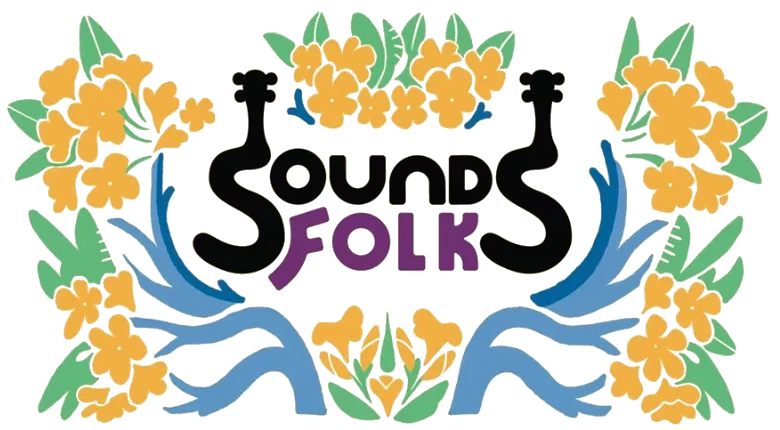
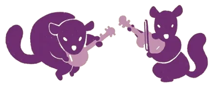
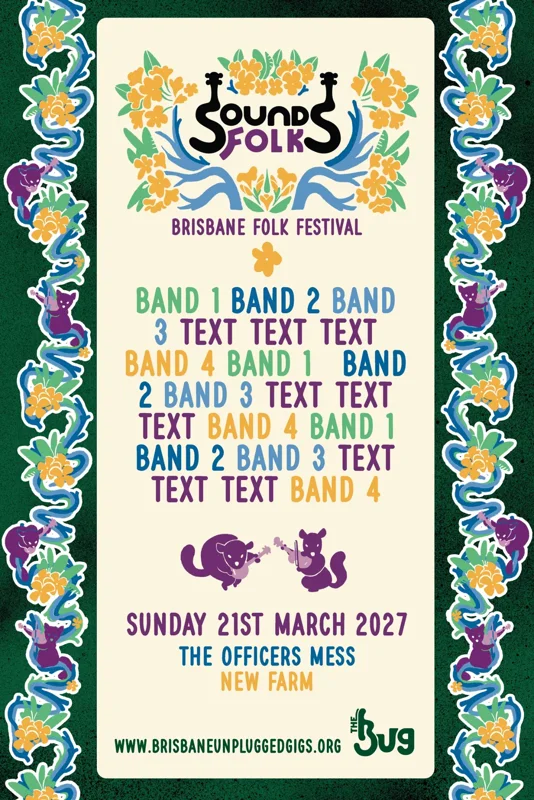

Early Bird
$45
- Full-day entry
- Limited release

Brisbane Folk Festival
Sunday 21st March 2027
The Officers Mess
New Farm
A full day of strings, songs and stories from Brisbane and beyond. Tap an act to read more.

Times are a guide and may shift on the day.
One day, every act. Grab yours before they're gone.
$45
Most popular
$60
$40
The Officers Mess
New Farm, Brisbane
A heritage space by the river with room to sit, listen and wander between sets. Bring a picnic rug and settle in for the day.

Yes! Kids are very welcome. Under 12s get in free with a paying adult.
Absolutely. There's a jam session corner running all afternoon – bring your fiddle, banjo, whistle or voice.
Local food stalls and a licensed bar run all day. No BYO alcohol, but you're welcome to bring a picnic.
The show goes on. Main sets move under cover, so pack a jacket just in case.
Tickets are refundable up to 14 days before the event. After that, you can transfer your ticket to a friend.